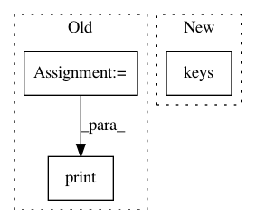

0557b8abe6df2bae50bbda83478762ab96ec25ba,examples/semantic_segmentation/eval_semantic_segmentation_multi.py,,main,#,15
Before Change
print("{:>23} : {:.4f}".format(label_name, iu))
print("=" * 34)
print("{:>23} : {:.4f}".format("mean IoU", result["miou"]))
print("{:>23} : {:.4f}".format(
"Class average accuracy", result["mean_class_accuracy"]))
print("{:>23} : {:.4f}".format(
"Global average accuracy", result["pixel_accuracy"]))
After Change
parser = argparse.ArgumentParser()
parser.add_argument(
"--dataset", choices=("cityscapes", "ade20k", "camvid", "voc"))
parser.add_argument("--model", choices=sorted(models.keys()))
parser.add_argument("--pretrained-model")
parser.add_argument("--batchsize", type=int)
parser.add_argument("--input-size", type=int, default=None)
In pattern: SUPERPATTERN
Frequency: 3
Non-data size: 3
Instances
Project Name: chainer/chainercv
Commit Name: 0557b8abe6df2bae50bbda83478762ab96ec25ba
Time: 2019-05-17
Author: shingogo@hotmail.co.jp
File Name: examples/semantic_segmentation/eval_semantic_segmentation_multi.py
Class Name:
Method Name: main
Project Name: NifTK/NiftyNet
Commit Name: 2c526df0cf1fe56c579b77816ef9d783169ded39
Time: 2019-06-05
Author: ucabtmv@ucl.ac.uk
File Name: niftynet/contrib/csv_reader/csv_reader.py
Class Name: CSVReader
Method Name: shapes
Project Name: NifTK/NiftyNet
Commit Name: 2c526df0cf1fe56c579b77816ef9d783169ded39
Time: 2019-06-05
Author: ucabtmv@ucl.ac.uk
File Name: niftynet/contrib/csv_reader/csv_reader.py
Class Name: CSVReader
Method Name: tf_dtypes